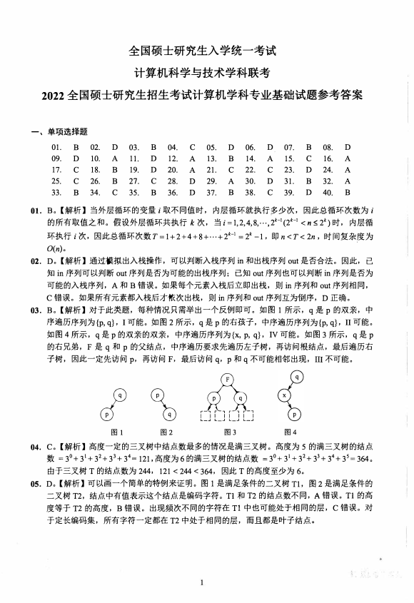
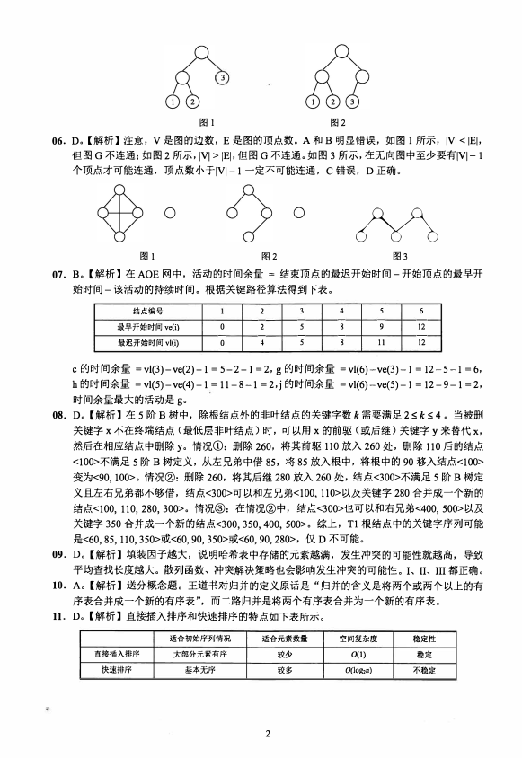
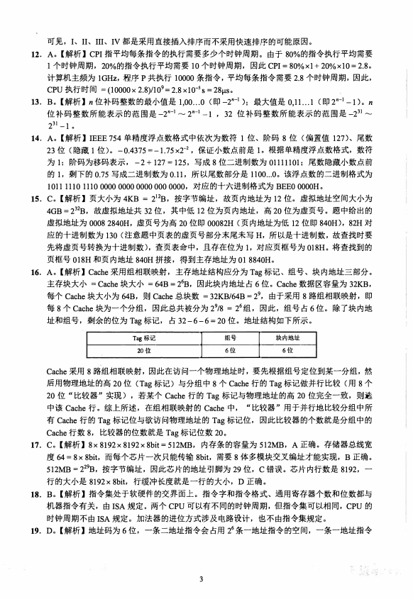
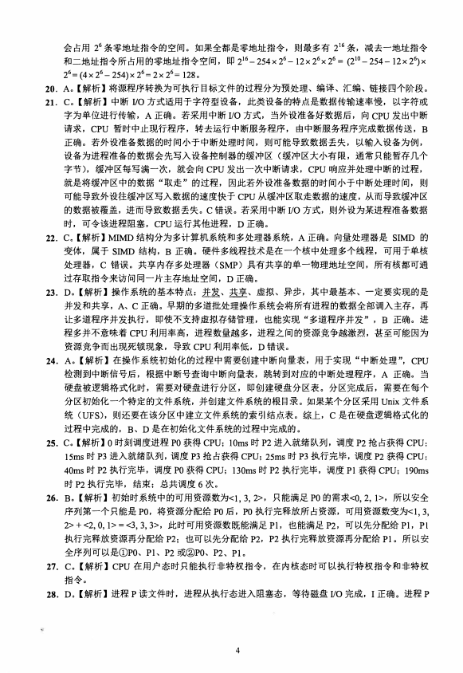
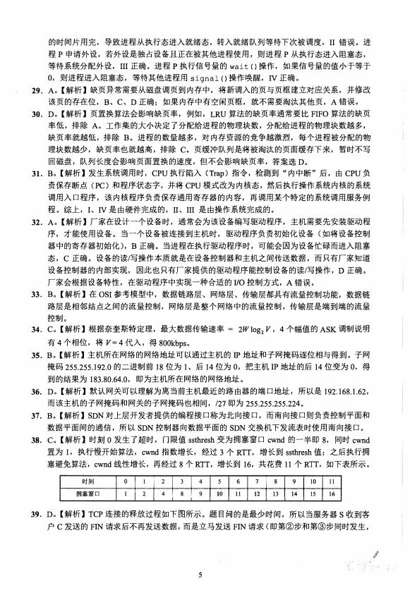
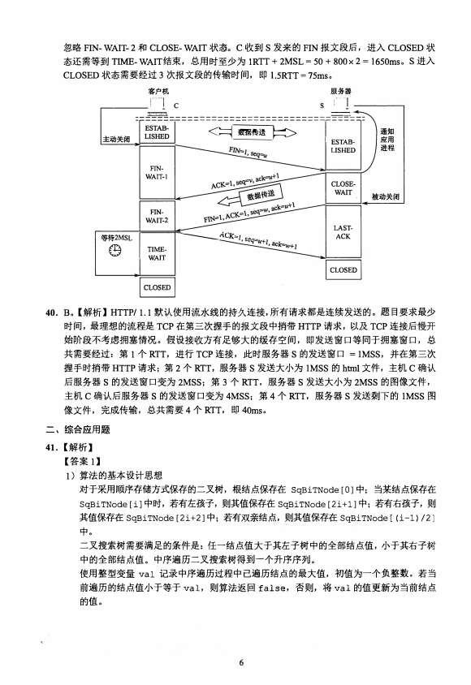
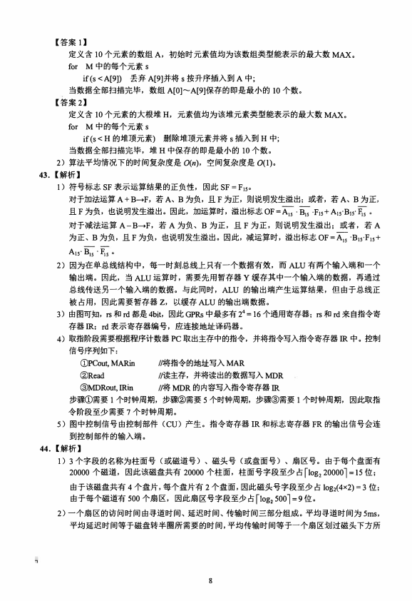
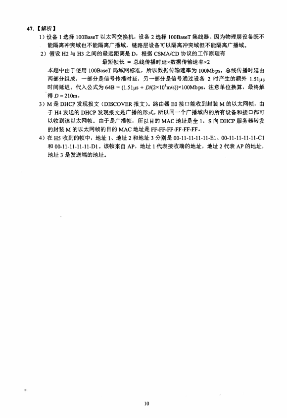

第 1 / 10 页

全国硕士研究生入学统一考试
计算机科学与技术学科联考
2022全国硕士研究生招生考试计算机学科专业基础试题参考答案
一、单项选择题
01.
09.
17.
25.
33.
02.
10.
18.
26.
34.
03.
11.
19.
27.
35.
04.
12.
20.
28.
36.
05.
13.
21.
29.
37.
06.
14.
22.
30.
38.
07.
15.
23.
31.
39.
08.
16.
24.
32.
40.
D
A
A
A
B
B
C
D
B
D
D
A
C
D
C
D
B
C
A
B
C
A
A
D
D
B
D
D
C
B
D
A
B
B
C
B
D
C
C
B
01. B。【解析】当外层循环的变量i取不同值时，内层循环就执行多少次，因此总循环次数为i
的所有取值之和。假设外层循环共执行k次，当i = 1,2,4,8,…，2
/c-l (2
k-l < ll Á 2
/c )时，内层循
环执行i 次，因此总循环次数T=1+2+4+8+…+2
k-l = 2
k -1, 即n <T <2n ，时间复杂度为
O(n)。
02. D。【解析】通过模拟出入栈操作，可以判断入栈序列in和出栈序列out 是否合法。因此，已
知in 序列可以判断out 序列是否为可能的出栈序列；
已知out 序列也可以判断in序列是否为
可能的入栈序列，A和B错误。如果每个元素入栈后立即出栈，则in 序列和out 序列相同，
C错误。如果所有元素都入栈后才依次出栈，则in 序列和out 序列互为倒序，D 正确。
03. B。【解析】对千此类题，每种情况只需举出一个反例即可。如图1 所示，q是p的双亲，中
序遍历序列为{p, q}, I 可能。如图2 所示，q 是p 的右孩子，中序遍历序列为{p, q}, II 可能。
如图4 所示，q 是p 的双亲的双亲，中序遍历序列为{x, p, q}, IV 可能。如图3 所示，q 是p
的右兄弟，F 是q和p的父结点，中序遍历要求先遍历左子树，再访问根结点，最后遍历右
子树，因此一定先访问p, 再访问F, 最后访问q, p 和q 不可能相邻出现，III 不可能。
产3
图1
气3
图2
r
_
�-
r
_
L
r
_
�
q
r
_
L
F
F
1
J
p
r
_
L
r
-
,
－
－
L
1
L
卢
图3
图4
04.
C。【解析】高度一定的三叉树中结点数最多的情况是满三叉树。高度为5 的满三叉树的结点
数＝3
°+3
1+3
2+3
3+3
4= 121，高度为6 的满三叉树的结点数＝3
°+31+ 3
2+ 33+ 3
4+ 3
5 = 364。
由千三叉树T 的结点数为244,
121 < 244 < 364, 因此T 的高度至少为6。
05. D。【解析】可以画一个简单的特例来证明。图1 是满足条件的二叉树Tl,
图2 是满足条件的
二叉树T2，结点中有值表示这个结点是编码字符。Tl 和T2 的结点数不同，A错误。Tl 的高
度等于T2 的高度，B错误。出现频次不同的字符在Tl 中也可能处千相同的层，C错误。对
千定长编码集，所有字符一定都在T2 中处于相同的层，而且都是叶子结点。
. '�
查看 / 复制本页文字
本页源文件的文字编码有异常。原卷显示正常；复制文字需对照原卷核查。
全国硕士研究生入学统一考试
计算机科学与技术学科联考
2022全国硕士研究生招生考试计算机学科专业基础试题参考答案
一、单项选择题
01.
09.
17.
25.
33.
02.
10.
18.
26.
34.
03.
11.
19.
27.
35.
04.
12.
20.
28.
36.
05.
13.
21.
29.
37.
06.
14.
22.
30.
38.
07.
15.
23.
31.
39.
08.
16.
24.
32.
40.
D
A
A
A
B
B
C
D
B
D
D
A
C
D
C
D
B
C
A
B
C
A
A
D
D
B
D
D
C
B
D
A
B
B
C
B
D
C
C
B
01. B。【解析】当外层循环的变量i取不同值时，内层循环就执行多少次，因此总循环次数为i
的所有取值之和。假设外层循环共执行k次，当i = 1,2,4,8,…，2
/c-l (2
k-l < ll Á 2
/c )时，内层循
环执行i 次，因此总循环次数T=1+2+4+8+…+2
k-l = 2
k -1, 即n <T <2n ，时间复杂度为
O(n)。
02. D。【解析】通过模拟出入栈操作，可以判断入栈序列in和出栈序列out 是否合法。因此，已
知in 序列可以判断out 序列是否为可能的出栈序列；
已知out 序列也可以判断in序列是否为
可能的入栈序列，A和B错误。如果每个元素入栈后立即出栈，则in 序列和out 序列相同，
C错误。如果所有元素都入栈后才依次出栈，则in 序列和out 序列互为倒序，D 正确。
03. B。【解析】对千此类题，每种情况只需举出一个反例即可。如图1 所示，q是p的双亲，中
序遍历序列为{p, q}, I 可能。如图2 所示，q 是p 的右孩子，中序遍历序列为{p, q}, II 可能。
如图4 所示，q 是p 的双亲的双亲，中序遍历序列为{x, p, q}, IV 可能。如图3 所示，q 是p
的右兄弟，F 是q和p的父结点，中序遍历要求先遍历左子树，再访问根结点，最后遍历右
子树，因此一定先访问p, 再访问F, 最后访问q, p 和q 不可能相邻出现，III 不可能。
产3
图1
气3
图2
r
_
�-
r
_
L
r
_
�
q
r
_
L
F
F
1
J
p
r
_
L
r
-
,
－
－
L
1
L
卢
图3
图4
04.
C。【解析】高度一定的三叉树中结点数最多的情况是满三叉树。高度为5 的满三叉树的结点
数＝3
°+3
1+3
2+3
3+3
4= 121，高度为6 的满三叉树的结点数＝3
°+31+ 3
2+ 33+ 3
4+ 3
5 = 364。
由千三叉树T 的结点数为244,
121 < 244 < 364, 因此T 的高度至少为6。
05. D。【解析】可以画一个简单的特例来证明。图1 是满足条件的二叉树Tl,
图2 是满足条件的
二叉树T2，结点中有值表示这个结点是编码字符。Tl 和T2 的结点数不同，A错误。Tl 的高
度等于T2 的高度，B错误。出现频次不同的字符在Tl 中也可能处千相同的层，C错误。对
千定长编码集，所有字符一定都在T2 中处于相同的层，而且都是叶子结点。
. '�
第 2 / 10 页

3
图1
图2
06. D。【解析】注意，V 是图的边数，E 是图的顶点数。A 和B 明显错误，如图1 所示，IVl<IEI,
但图G不连通；如图2 所示，IVl >IE|，但图G不连通。如图3 所示，在无向图中至少要有冈－l
个顶点才可能连通，顶点数小于|Vl-1 一定不可能连通，C 错误，D 正确。
。
。
／
图1
图2
图3
07. B。【解析】在AOE 网中，活动的时间余量＝结束顶点的最迟开始时间－开始顶点的最早开
始时间－该活动的待续时间。根据关键路径算法得到下表。
结点编号
最早开始时间ve(i)
最迟开始时间vl(i)
0
-
o
2
-
2
-
4
3
-
5
-
5
4一
8
-
8
5
-
9
11
6
-
12
-
12
c的时间余量＝vl(3)-ve(2)-1 =5-2-1 =2, g 的时间余量＝vl(6)-ve(3)-1 = 12-5-1 = 6,
h 的时间余量＝vl(5)-ve(4)-1 = 11-8-1 =2,j 的时间余量＝vl(6)-ve(5)-1 = 12-9-1 =2,
时间余量最大的活动是g。
08. D。【解析】在5 阶B 树中，除根结点外的非叶结点的关键字数K 需要满足2 k 生4 。当被删
关键字x不在终端结点（最低层非叶结点）时，可以用x的前驱（或后继）关键字y 来替代X,
然后在相应结点中删除y。情况＠：删除260, 将其前驱110 放入260 处，删除110 后的结点
<100>不满足5 阶B 树定义，从左兄弟中借85, 将85 放入根中，将根中的90 移入结点<100>
变为<90,100>。情况＠：删除260, 将其后继280 放入260 处，结点<300>不满足5 阶B 树定
义且左右兄弟都不够借，结点<300>可以和左兄弟<100,110>以及关键字280 合并成一个新的
结点<100,110, 280, 300>。情况＠：在情况＠中，结点<300>也可以和右兄弟<400,500>以及
关键字350 合并成一个新的结点<300,350,400,500>。综上，Tl根结点中的关键字序列可能
是<60,85,110,350>或<60,90,350>或<60,90,280>，仅D 不可能。
09. D。【解析】填装因子越大，说明哈希表中存储的元素越满，发生冲突的可能性就越高，导致
平均查找长度越大。散列函数、冲突解决策略也会影响发生冲突的可能性。I、II、III 都正确。
10. A。【解析】送分概念题。王道书对归并的定义原话是
“归并的含义是将两个或两个以上的有
序表合并成一个新的有序表
”，而二路归并是将两个有序表合并为
一个新的有序表。
11. D。【解析】直接插入排序和快速排序的特点如下表所示。
直接插入排序
快速排序
适合初始序列情况
大部分元素有序
基本无序
适合元素数量
较少
较多
空间复杂度
0(1)
O(login)
稳定性
稳定
不稳定
2
查看 / 复制本页文字
3 图1 图2 06. D。【解析】注意，V 是图的边数，E 是图的顶点数。A 和B 明显错误，如图1 所示，IVl<IEI, 但图G不连通；如图2 所示，IVl >IE|，但图G不连通。如图3 所示，在无向图中至少要有冈－l 个顶点才可能连通，顶点数小于|Vl-1 一定不可能连通，C 错误，D 正确。 。 。 ／ 图1 图2 图3 07. B。【解析】在AOE 网中，活动的时间余量＝结束顶点的最迟开始时间－开始顶点的最早开 始时间－该活动的待续时间。根据关键路径算法得到下表。 结点编号 最早开始时间ve(i) 最迟开始时间vl(i) 0 - o 2 - 2 - 4 3 - 5 - 5 4一 8 - 8 5 - 9 11 6 - 12 - 12 c的时间余量＝vl(3)-ve(2)-1 =5-2-1 =2, g 的时间余量＝vl(6)-ve(3)-1 = 12-5-1 = 6, h 的时间余量＝vl(5)-ve(4)-1 = 11-8-1 =2,j 的时间余量＝vl(6)-ve(5)-1 = 12-9-1 =2, 时间余量最大的活动是g。 08. D。【解析】在5 阶B 树中，除根结点外的非叶结点的关键字数K 需要满足2 k 生4 。当被删 关键字x不在终端结点（最低层非叶结点）时，可以用x的前驱（或后继）关键字y 来替代X, 然后在相应结点中删除y。情况＠：删除260, 将其前驱110 放入260 处，删除110 后的结点 <100>不满足5 阶B 树定义，从左兄弟中借85, 将85 放入根中，将根中的90 移入结点<100> 变为<90,100>。情况＠：删除260, 将其后继280 放入260 处，结点<300>不满足5 阶B 树定 义且左右兄弟都不够借，结点<300>可以和左兄弟<100,110>以及关键字280 合并成一个新的 结点<100,110, 280, 300>。情况＠：在情况＠中，结点<300>也可以和右兄弟<400,500>以及 关键字350 合并成一个新的结点<300,350,400,500>。综上，Tl根结点中的关键字序列可能 是<60,85,110,350>或<60,90,350>或<60,90,280>，仅D 不可能。 09. D。【解析】填装因子越大，说明哈希表中存储的元素越满，发生冲突的可能性就越高，导致 平均查找长度越大。散列函数、冲突解决策略也会影响发生冲突的可能性。I、II、III 都正确。 10. A。【解析】送分概念题。王道书对归并的定义原话是 “归并的含义是将两个或两个以上的有 序表合并成一个新的有序表 ”，而二路归并是将两个有序表合并为 一个新的有序表。 11. D。【解析】直接插入排序和快速排序的特点如下表所示。 直接插入排序 快速排序 适合初始序列情况 大部分元素有序 基本无序 适合元素数量 较少 较多 空间复杂度 0(1) O(login) 稳定性 稳定 不稳定 2
第 3 / 10 页

可见，I、II、III、IV 都是采用直接插入排序而不采用快速排序的可能原因。
12. A。【解析】CPI 指平均每条指令的执行需要多少个时钟周期。由千80％的指令执行平均需要
1 个时钟周期，20％的指令执行平均需要10 个时钟周期，因此CPI=80%xl + 20%x10 = 2.8。
计算机主频为1GHz, 程序P 共执行10000 条指令，平均每条指令需要2.8 个时钟周期，因此，
CPU 执行时间＝（10000 X 2.8)/109 = 2.8 X 1 o-s S = 28µs。
13. B。【解析】n位补码整数的最小值是1,00 …0（即－2n一1 )：最大值是0,11…l （即2正1 _1)。n
位补码整数所能表示的范围是－2正I ,..._, 2n-l -1 , 32 位补码整数所能表示的范围是－231 ~
231-1。
14. A。【解析】IEEE 754 单精度浮点数格式中依次为数符1 位、阶码8 位（偏置值127)、尾数
23 位（隐藏1 位）。－0.4375 = -1.75 xi-2, 保证小数点前是l。根据单精度浮点数格式，数符
为1: 阶码为移码表示，－2 + 127 = 125, 写成8 位二进制数为01111101; 尾数隐藏小数点前
的1，剩下的0.75 写成二进制数为0.11, 所以尾数部分是1100…0。该浮点数的二进制格式为
1011 1110 1110 0000 0000 0000 000 0000, 对应的十六进制格式为BEEO OOOOH。
15. C。【解析】页大小为4KB = 212B，按字节编址，故页内地址为12 位。虚拟地址空间大小为
4GB=232B, 故虚拟地址共32 位，其中低12 位为页内地址，高20 位为虚页号。题中给出的
虚拟地址为0008 2840H, 虚页号为高20 位即00082H（页内地址为低12 位即840H), 82H 对
应的十进制数为130（注意题中页表的虚页号部分末尾未写H, 所以是十进制数，故查找时要
先将虚页号转换为十进制数），查页表命中，且存在位为1, 对应页框号为018H。将查找到的
页框号018H 和页内地址840H 拼接，得到主存地址为01 8840H。
16. A。【解析】Cache 采用组相联映射，主存地址结构应分为Tag 标记、组号、块内地址三部分。
主存块大小＝Cache 块大小＝64B=26B, 因此块内地址占6 位。Cache 数据区容量为32KB,
每个Cache 块大小为64B, 则Cache 总块数＝32KB/64B = 29, 由千采用8 路组相联映射，即
每8 个Cache 块为一个分组，因此总共被分为29/8 = 26组，因此，组号占6 位。除了块内地
址和组号，剩余的位为Tag 标记，占32-6-6=20 位。地址结构如下所示。
T::：
二了
Cache 采用8 路组相联映射，因此在访问一个物理地址时，要先根据组号定位到某一分组，然
后用物理地址的高20 位(Tag 标记）与分组中8 个Cache 行的Tag 标记做并行比较（用8 个
20 位
“比较器
” 实现），若某个Cache 行的Tag 标记与物理地址的高20 位完全一致，则选
中该Cache 行。综上所述，在组相联映射的Cache 中，
“比较器
” 用千并行地比较分组中所
有Cache 行的Tag 标记位与欲访问物理地址的Tag 标记位，因此比较器的个数就是分组中的
Cache 行数8, 比较器的位数就是Tag 标记位数20。
17. C。【解析】8x 8192x 8192x 8bit = 512MB, 内存条的容量为512MB, A正确。存储器总线宽
度64= 8x 8bit, 而每个芯片一次只能传输8bit, 需要8 体多模块交叉编址才能实现，B正确。
512MB =229B，按字节编址，因此芯片的地址引脚为29 位，C 错误。芯片内行数是8192,
一
行的大小是8192x 8bit, 行缓冲长度就是一行的大小，D正确。
18. B。【解析】指令集处千软硬件的交界面上。指令字和指令格式、通用寄存器个数和位数都与
机器指令有关，由ISA 规定。两个CPU 可以有不同的时钟周期，但指令集可以相同，CPU 的
时钟周期不由ISA 规定。加法器的进位方式涉及电路设计，也不由指令集规定。
19. D。【解析】地址码为6位，一条二地址指令会占用26 条一地址指令的空间，一条一地址指令
3
查看 / 复制本页文字
可见，I、II、III、IV 都是采用直接插入排序而不采用快速排序的可能原因。 12. A。【解析】CPI 指平均每条指令的执行需要多少个时钟周期。由千80％的指令执行平均需要 1 个时钟周期，20％的指令执行平均需要10 个时钟周期，因此CPI=80%xl + 20%x10 = 2.8。 计算机主频为1GHz, 程序P 共执行10000 条指令，平均每条指令需要2.8 个时钟周期，因此， CPU 执行时间＝（10000 X 2.8)/109 = 2.8 X 1 o-s S = 28µs。 13. B。【解析】n位补码整数的最小值是1,00 …0（即－2n一1 )：最大值是0,11…l （即2正1 _1)。n 位补码整数所能表示的范围是－2正I ,..._, 2n-l -1 , 32 位补码整数所能表示的范围是－231 ~ 231-1。 14. A。【解析】IEEE 754 单精度浮点数格式中依次为数符1 位、阶码8 位（偏置值127)、尾数 23 位（隐藏1 位）。－0.4375 = -1.75 xi-2, 保证小数点前是l。根据单精度浮点数格式，数符 为1: 阶码为移码表示，－2 + 127 = 125, 写成8 位二进制数为01111101; 尾数隐藏小数点前 的1，剩下的0.75 写成二进制数为0.11, 所以尾数部分是1100…0。该浮点数的二进制格式为 1011 1110 1110 0000 0000 0000 000 0000, 对应的十六进制格式为BEEO OOOOH。 15. C。【解析】页大小为4KB = 212B，按字节编址，故页内地址为12 位。虚拟地址空间大小为 4GB=232B, 故虚拟地址共32 位，其中低12 位为页内地址，高20 位为虚页号。题中给出的 虚拟地址为0008 2840H, 虚页号为高20 位即00082H（页内地址为低12 位即840H), 82H 对 应的十进制数为130（注意题中页表的虚页号部分末尾未写H, 所以是十进制数，故查找时要 先将虚页号转换为十进制数），查页表命中，且存在位为1, 对应页框号为018H。将查找到的 页框号018H 和页内地址840H 拼接，得到主存地址为01 8840H。 16. A。【解析】Cache 采用组相联映射，主存地址结构应分为Tag 标记、组号、块内地址三部分。 主存块大小＝Cache 块大小＝64B=26B, 因此块内地址占6 位。Cache 数据区容量为32KB, 每个Cache 块大小为64B, 则Cache 总块数＝32KB/64B = 29, 由千采用8 路组相联映射，即 每8 个Cache 块为一个分组，因此总共被分为29/8 = 26组，因此，组号占6 位。除了块内地 址和组号，剩余的位为Tag 标记，占32-6-6=20 位。地址结构如下所示。 T::： 二了 Cache 采用8 路组相联映射，因此在访问一个物理地址时，要先根据组号定位到某一分组，然 后用物理地址的高20 位(Tag 标记）与分组中8 个Cache 行的Tag 标记做并行比较（用8 个 20 位 “比较器 ” 实现），若某个Cache 行的Tag 标记与物理地址的高20 位完全一致，则选 中该Cache 行。综上所述，在组相联映射的Cache 中， “比较器 ” 用千并行地比较分组中所 有Cache 行的Tag 标记位与欲访问物理地址的Tag 标记位，因此比较器的个数就是分组中的 Cache 行数8, 比较器的位数就是Tag 标记位数20。 17. C。【解析】8x 8192x 8192x 8bit = 512MB, 内存条的容量为512MB, A正确。存储器总线宽 度64= 8x 8bit, 而每个芯片一次只能传输8bit, 需要8 体多模块交叉编址才能实现，B正确。 512MB =229B，按字节编址，因此芯片的地址引脚为29 位，C 错误。芯片内行数是8192, 一 行的大小是8192x 8bit, 行缓冲长度就是一行的大小，D正确。 18. B。【解析】指令集处千软硬件的交界面上。指令字和指令格式、通用寄存器个数和位数都与 机器指令有关，由ISA 规定。两个CPU 可以有不同的时钟周期，但指令集可以相同，CPU 的 时钟周期不由ISA 规定。加法器的进位方式涉及电路设计，也不由指令集规定。 19. D。【解析】地址码为6位，一条二地址指令会占用26 条一地址指令的空间，一条一地址指令 3
第 4 / 10 页

会占用26 条零地址指令的空间。如果全都是零地址指令，则最多有2 “ 条，减去一地址指令
和二地址指令所占用的零地址指令空间，即2 16-254x26-12x26x26 = (2 10-254-12x26)x
26= (4x 26-254)x 26= 2x 26= 128。
20. A。【解析】将源程序转换为可执行目标文件的过程分为预处理、编译、汇编、链接四个阶段。
21. C。【解析】中断I/0方式适用于字符型设备，此类设备的特点是数据传输速率慢，以字符或
字为单位进行传输，A正确。若采用中断I/0方式，当外设准备好数据后，向CPU发出中断
请求，CPU暂时中止现行程序，转去运行中断服务程序，由中断服务程序完成数据传送，B
正确。若外设准备数据的时间小于中断处理时间，则可能导致数据丢失，以输入设备为例，
设备为进程准备的数据会先写入设备控制器的缓冲区（缓冲区大小有限，通常只能暂存几个
字节），缓冲区每写满一次，就会向CPU发出一次中断请求，CPU响应并处理中断的过程，
就是将缓冲区中的数据
“ 取走
” 的过程，因此若外设准备数据的时间小于中断处理时间，则
可能导致外设往缓冲区写入数据的速度快千CPU从缓冲区取走数据的速度，从而导致缓冲区
的数据被覆盖，进而导致数据丢失。C错误。若采用中断I/0方式，则外设为某进程准备数据
时，可令该进程阻塞，CPU运行其他进程，D正确。
22. C。【解析】MIMD结构分为多计算机系统和多处理器系统，A正确。向量处理器是SIMD的
变体，属于SIMD 结构，B正确。硬件多线程技术是在一个核中处理多个线程，可用千单核
处理器，C 错误。共享内存多处理器(S MP)具有共享的单一物理地址空间，所有核都可通
过存取指令来访问同一片主存地址空间，D正确。
23. D。【解析】操作系统的基本特点：进发、巷烹、虚拟、异步，其中最基本、一定要实现的是
并发和共享，A、C正确。早期的多道批处理操作系统会将所有进程的数据全部调入主存，再
让多道程序并发执行，即使不支持虚拟存储管理，也能实现
“ 多道程序并发
” , B 正确。进
程多并不意味着CPU利用率高，进程数量越多，进程之间的资源竞争越激烈，甚至可能因为
资源竞争而出现死锁现象，导致CPU利用率低，D错误。
24. A。【解析】在操作系统初始化的过程中需要创建中断向量表，用千实现
“ 中断处理
”,CPU
检测到中断信号后，根据中断号查询中断向量表，跳转到对应的中断处理程序，A 正确。当
硬盘被逻辑格式化时，需要对硬盘进行分区，即创建硬盘分区表。分区完成后，需要在每个
分区初始化一个特定的文件系统，并创建文件系统的根目录。如果某个分区采用Unix文件系
统( UFS)，则还要在该分区中建立文件系统的索引结点表。综上，C 是在硬盘逻辑格式化的
过程中完成的，B、D 是在初始化文件系统的过程中完成的。
25. C。【解析】0 时刻调度进程PO获得CPU; !Oms时P2 进入就绪队列，调度P2抢占获得CPU;
15ms时P3 进入就绪队列，调度P3抢占获得CPU;25ms时P3执行完毕，调度P2获得CPU:
40ms时P2执行完毕，调度PO获得CPU;130ms时P2执行完毕，调度Pl获得CPU; 190ms
时P2执行完毕，结束；总共调度6次。
26. B。【解析】初始时系统中的可用资源数为<1, 3, 2>，只能满足PO 的需求<0, 2, 1>，所以安全
序列第一个只能是PO, 将资源分配给PO 后，PO执行完释放所占资源，可用资源数变为<l, 3,
2> + <2, 0, 1> = <3, 3, 3>，此时可用资源数既能满足Pl,也能满足P2, 可以先分配给Pl,Pl
执行完释放资源再分配给P2 ;也可以先分配给P2,P2执行完释放资源再分配给Pl。所以安
全序列可以是＠PO、Pl、P2或＠PO、P2、Pl。
27. C。【解析】CPU在用户态时只能执行非特权指令，在内核态时可以执行特权指令和非特权
指令。
28. D。【解析】进程P读文件时，进程从执行态进入阻塞态，等待磁盘I/0完成，I正确。进程P
4
查看 / 复制本页文字
会占用26 条零地址指令的空间。如果全都是零地址指令，则最多有2 “ 条，减去一地址指令 和二地址指令所占用的零地址指令空间，即2 16-254x26-12x26x26 = (2 10-254-12x26)x 26= (4x 26-254)x 26= 2x 26= 128。 20. A。【解析】将源程序转换为可执行目标文件的过程分为预处理、编译、汇编、链接四个阶段。 21. C。【解析】中断I/0方式适用于字符型设备，此类设备的特点是数据传输速率慢，以字符或 字为单位进行传输，A正确。若采用中断I/0方式，当外设准备好数据后，向CPU发出中断 请求，CPU暂时中止现行程序，转去运行中断服务程序，由中断服务程序完成数据传送，B 正确。若外设准备数据的时间小于中断处理时间，则可能导致数据丢失，以输入设备为例， 设备为进程准备的数据会先写入设备控制器的缓冲区（缓冲区大小有限，通常只能暂存几个 字节），缓冲区每写满一次，就会向CPU发出一次中断请求，CPU响应并处理中断的过程， 就是将缓冲区中的数据 “ 取走 ” 的过程，因此若外设准备数据的时间小于中断处理时间，则 可能导致外设往缓冲区写入数据的速度快千CPU从缓冲区取走数据的速度，从而导致缓冲区 的数据被覆盖，进而导致数据丢失。C错误。若采用中断I/0方式，则外设为某进程准备数据 时，可令该进程阻塞，CPU运行其他进程，D正确。 22. C。【解析】MIMD结构分为多计算机系统和多处理器系统，A正确。向量处理器是SIMD的 变体，属于SIMD 结构，B正确。硬件多线程技术是在一个核中处理多个线程，可用千单核 处理器，C 错误。共享内存多处理器(S MP)具有共享的单一物理地址空间，所有核都可通 过存取指令来访问同一片主存地址空间，D正确。 23. D。【解析】操作系统的基本特点：进发、巷烹、虚拟、异步，其中最基本、一定要实现的是 并发和共享，A、C正确。早期的多道批处理操作系统会将所有进程的数据全部调入主存，再 让多道程序并发执行，即使不支持虚拟存储管理，也能实现 “ 多道程序并发 ” , B 正确。进 程多并不意味着CPU利用率高，进程数量越多，进程之间的资源竞争越激烈，甚至可能因为 资源竞争而出现死锁现象，导致CPU利用率低，D错误。 24. A。【解析】在操作系统初始化的过程中需要创建中断向量表，用千实现 “ 中断处理 ”,CPU 检测到中断信号后，根据中断号查询中断向量表，跳转到对应的中断处理程序，A 正确。当 硬盘被逻辑格式化时，需要对硬盘进行分区，即创建硬盘分区表。分区完成后，需要在每个 分区初始化一个特定的文件系统，并创建文件系统的根目录。如果某个分区采用Unix文件系 统( UFS)，则还要在该分区中建立文件系统的索引结点表。综上，C 是在硬盘逻辑格式化的 过程中完成的，B、D 是在初始化文件系统的过程中完成的。 25. C。【解析】0 时刻调度进程PO获得CPU; !Oms时P2 进入就绪队列，调度P2抢占获得CPU; 15ms时P3 进入就绪队列，调度P3抢占获得CPU;25ms时P3执行完毕，调度P2获得CPU: 40ms时P2执行完毕，调度PO获得CPU;130ms时P2执行完毕，调度Pl获得CPU; 190ms 时P2执行完毕，结束；总共调度6次。 26. B。【解析】初始时系统中的可用资源数为<1, 3, 2>，只能满足PO 的需求<0, 2, 1>，所以安全 序列第一个只能是PO, 将资源分配给PO 后，PO执行完释放所占资源，可用资源数变为<l, 3, 2> + <2, 0, 1> = <3, 3, 3>，此时可用资源数既能满足Pl,也能满足P2, 可以先分配给Pl,Pl 执行完释放资源再分配给P2 ;也可以先分配给P2,P2执行完释放资源再分配给Pl。所以安 全序列可以是＠PO、Pl、P2或＠PO、P2、Pl。 27. C。【解析】CPU在用户态时只能执行非特权指令，在内核态时可以执行特权指令和非特权 指令。 28. D。【解析】进程P读文件时，进程从执行态进入阻塞态，等待磁盘I/0完成，I正确。进程P 4
第 5 / 10 页

的时间片用完，导致进程从执行态进入就绪态，转入就绪队列等待下次被调度，II 错误。进
程P 申请外设，若外设是独占设备且正在被其他进程使用，则进程P 从执行态进入阻塞态，
等待系统分配外设，III正确。进程P 执行信号量的wait( ）操作，如果信号量的值小于等千
o, 则进程进入阻塞态，等待其他进程用signal( ）操作唤醒，IV正确。
29. A。【解析】缺页异常需要从磁盘调页到内存中，将新调入的页与页框建立对应关系，并修改
该页的存在位，B、C、D正确；如果内存中有空闲页框，就不需要淘汰其他页，A错误。
30. D。【解析】页置换算法会影响缺页率，例如，LRU 算法的缺页率通常要比FIFO 算法的缺页
率低，排除A。工作集的大小决定了分配给进程的物理块数，分配给进程的物理块数越多，
缺页率就越低，排除B。进程的数量越多，对内存资源的竞争越激烈，每个进程被分配的物
理块数越少，缺页率也就越高，排除C。页缓冲队列是将被淘汰的页面缓存下来，暂时不写
回磁盘，队列长度会影响页面置换的速度，但不会影响缺页率，答案选D。
31. B。【解析】发生系统调用时，CPU 执行陷入(Trap) 指令，检测到
“内中断
” 后，由CPU 负
责保存断点(PC) 和程序状态字，并将CPU 模式改为内核态，然后执行操作系统内核的系统
调用入口程序，该内核程序负责保存通用寄存器的内容，再调用某个特定的系统调用服务例
程。综上，I、IV 是由硬件完成的，II、III 是由操作系统完成的。
32. A。【解析】厂家在设计一个设备时，通常会为该设备编写驱动程序，主机需要先安装驱动程
序，才能使用设备。当一个设备被连接到主机时，驱动程序负责初始化设备（如将设备控制
器中的寄存器初始化），B正确。当进程在执行驱动程序时，可能会因为设备忙碌而进入阻塞
态，C正确。设备的读／写操作本质就是在设备控制器和主机之间传送数据，而只有厂家知道
设备控制器的内部实现，因此也只有厂家提供的驱动程序能控制设备的读／写操作，D正确。
厂家会根据设备特性，在驱动程序中实现一种合适的1/0控制方式，A错误。
33. B。【解析】在OSI 参考模型中，数据链路层、网络层、传输层都具有流量控制功能，数据链
路层是相邻结点之间的流量控制，网络层是整个网络中的流量控制，传输层是端到端的流量
控制。
34. C。【解析】根据奈奎斯特定理，最大数据传输速率＝2Wlog2 V, 4 个幅值的ASK 调制说明
有4 个相位，将V=4 代入，得800kbps。
35. B。【解析】主机所在网络的网络地址可以通过主机的IP 地址和子网掩码逐位相与得到。子网
掩码255.255.192.0 的二进制前18 位为1、后14 位为o, 把主机1P地址的后14 位变为o, 得
到的结果为183.80.64.0, 即为主机所在网络的网络地址。
36. D。【解析】默认网关可以理解为离当前主机最近的路由器的端口地址，所以是192:168.1.62,
而该主机的子网掩码和网关的子网掩码也相同，／27 即为255.255.255.224。
37. B。【解析】SDN 对上层开发者提供的编程接口称为北向接口，而南向接口则负责控制平面和
数据平面间的通信，所以SDN 控制器向数据平面的SDN 交换机下发流表时使用南向接口。
38. c. 【解析】时刻0 发生了超时，门限值ssthresh 变为拥塞窗口cwnd 的一半即8, 同时cwnd
置为1, 执行慢开始算法，cwnd 指数增长，经过3 个RTT, 增长到ssthresh 值：之后执行拥
塞避免算法，cwnd 线性增长，再经过8 个RTT, 增长到16, 共花费11 个RTT, 如下表所示。
时刻
拥塞窗口
° I ; I : 1 : 1 : 1 150 1 161 | 172 1 183 1 ; | ：： I :；
39. D。【解析】TCP 连接的释放过程如下图所示。题目问的是最少时间，所以当服务器S 收到客
户C 发送的FIN 请求后不再发送数据，而是立马发送FIN 请求（即第＠步和第＠步同时发生，
5
查看 / 复制本页文字
的时间片用完，导致进程从执行态进入就绪态，转入就绪队列等待下次被调度，II 错误。进 程P 申请外设，若外设是独占设备且正在被其他进程使用，则进程P 从执行态进入阻塞态， 等待系统分配外设，III正确。进程P 执行信号量的wait( ）操作，如果信号量的值小于等千 o, 则进程进入阻塞态，等待其他进程用signal( ）操作唤醒，IV正确。 29. A。【解析】缺页异常需要从磁盘调页到内存中，将新调入的页与页框建立对应关系，并修改 该页的存在位，B、C、D正确；如果内存中有空闲页框，就不需要淘汰其他页，A错误。 30. D。【解析】页置换算法会影响缺页率，例如，LRU 算法的缺页率通常要比FIFO 算法的缺页 率低，排除A。工作集的大小决定了分配给进程的物理块数，分配给进程的物理块数越多， 缺页率就越低，排除B。进程的数量越多，对内存资源的竞争越激烈，每个进程被分配的物 理块数越少，缺页率也就越高，排除C。页缓冲队列是将被淘汰的页面缓存下来，暂时不写 回磁盘，队列长度会影响页面置换的速度，但不会影响缺页率，答案选D。 31. B。【解析】发生系统调用时，CPU 执行陷入(Trap) 指令，检测到 “内中断 ” 后，由CPU 负 责保存断点(PC) 和程序状态字，并将CPU 模式改为内核态，然后执行操作系统内核的系统 调用入口程序，该内核程序负责保存通用寄存器的内容，再调用某个特定的系统调用服务例 程。综上，I、IV 是由硬件完成的，II、III 是由操作系统完成的。 32. A。【解析】厂家在设计一个设备时，通常会为该设备编写驱动程序，主机需要先安装驱动程 序，才能使用设备。当一个设备被连接到主机时，驱动程序负责初始化设备（如将设备控制 器中的寄存器初始化），B正确。当进程在执行驱动程序时，可能会因为设备忙碌而进入阻塞 态，C正确。设备的读／写操作本质就是在设备控制器和主机之间传送数据，而只有厂家知道 设备控制器的内部实现，因此也只有厂家提供的驱动程序能控制设备的读／写操作，D正确。 厂家会根据设备特性，在驱动程序中实现一种合适的1/0控制方式，A错误。 33. B。【解析】在OSI 参考模型中，数据链路层、网络层、传输层都具有流量控制功能，数据链 路层是相邻结点之间的流量控制，网络层是整个网络中的流量控制，传输层是端到端的流量 控制。 34. C。【解析】根据奈奎斯特定理，最大数据传输速率＝2Wlog2 V, 4 个幅值的ASK 调制说明 有4 个相位，将V=4 代入，得800kbps。 35. B。【解析】主机所在网络的网络地址可以通过主机的IP 地址和子网掩码逐位相与得到。子网 掩码255.255.192.0 的二进制前18 位为1、后14 位为o, 把主机1P地址的后14 位变为o, 得 到的结果为183.80.64.0, 即为主机所在网络的网络地址。 36. D。【解析】默认网关可以理解为离当前主机最近的路由器的端口地址，所以是192:168.1.62, 而该主机的子网掩码和网关的子网掩码也相同，／27 即为255.255.255.224。 37. B。【解析】SDN 对上层开发者提供的编程接口称为北向接口，而南向接口则负责控制平面和 数据平面间的通信，所以SDN 控制器向数据平面的SDN 交换机下发流表时使用南向接口。 38. c. 【解析】时刻0 发生了超时，门限值ssthresh 变为拥塞窗口cwnd 的一半即8, 同时cwnd 置为1, 执行慢开始算法，cwnd 指数增长，经过3 个RTT, 增长到ssthresh 值：之后执行拥 塞避免算法，cwnd 线性增长，再经过8 个RTT, 增长到16, 共花费11 个RTT, 如下表所示。 时刻 拥塞窗口 ° I ; I : 1 : 1 : 1 150 1 161 | 172 1 183 1 ; | ：： I :； 39. D。【解析】TCP 连接的释放过程如下图所示。题目问的是最少时间，所以当服务器S 收到客 户C 发送的FIN 请求后不再发送数据，而是立马发送FIN 请求（即第＠步和第＠步同时发生， 5
第 6 / 10 页

忽略FIN-WAIT-2和CLOSE-WAIT状态）。C收到S发来的FIN报文段后，进入CLOSED状
态还需等到兀ME-WAIT结束，总用时至少为IRTT+ 2MSL = 50 + 800x 2 = 1650ms。S进入
CLOSED状态需要经过3次报文段的传输时间，即l.5RTT= 75ms。
客户机
服务器
!
、．、I
C
s
;
|
二，二二二二＝＝＝＝二二＝二二＝二二二二二二二二＝＝＝，二三三言三
三
，ESTAB-
LISHED
丽－
WAIT-I
知用程
通应进
FIN-
WAIT-2
畴2MSL
I
CB
TIME-
------ACK=1
LAST-
.0~_＿
WAIT
ACK
匠
三
40. B。【解析】HTTP/1.1默认使用流水线的持久连接，所有请求都是连续发送的。题目要求最少
时间，最理想的流程是TCP在第三次握手的报文段中捎带HTTP请求，以及TCP连接后慢开
始阶段不考虑拥塞情况。假设接收方有足够大的缓存空间，即发送窗口等同于拥塞窗口，总
共需要经过：第1个RTT, 进行TCP连接，此时服务器S的发送窗口＝lMSS, 并在第三次
握手时捎带HTTP请求；第2个RTT,服务器S发送大小为lMSS的html文件，主机C确认
后服务器S的发送窗口变为2MSS;第3个RTT, 服务器S发送大小为2MSS的图像文件，
主机C确认后服务器S的发送窗口变为4MSS;第4个RTT, 服务器S发送剩下的lMSS图
像文件，完成传输，总共需要4个RTT,
即40ms。
二、综合应用题
41.【解析】
【答案l】
l)算法的基本设计思想
对千采用顺序存储方式保存的二叉树，根结点保存在SqBiTNode[O] 中；当某结点保存在
SqBiTNode[i]中时，若有左孩子，则其值保存在SqBiTNode[2i+l]中；若有右孩子，则
其值保存在SqBiTNode[2i+2]中；若有双亲结点，则其值保存在SqBiTNode[ （七1) /2)
中。
二叉搜索树需要满足的条件是：任一结点值大千其左子树中的全部结点值，小千其右子树
中的全部结点值。中序遍历二叉搜索树得到
一个升序序列。
使用整型变量val 记录中序遍历过程中已遍历结点的最大值，初值为一个负整数。若当
前遍历的结点值小千等于val, 则算法返回false, 否则，将val 的值更新为当前结点
的值。
6
查看 / 复制本页文字
忽略FIN-WAIT-2和CLOSE-WAIT状态）。C收到S发来的FIN报文段后，进入CLOSED状 态还需等到兀ME-WAIT结束，总用时至少为IRTT+ 2MSL = 50 + 800x 2 = 1650ms。S进入 CLOSED状态需要经过3次报文段的传输时间，即l.5RTT= 75ms。 客户机 服务器 ! 、．、I C s ; | 二，二二二二＝＝＝＝二二＝二二＝二二二二二二二二＝＝＝，二三三言三 三 ，ESTAB- LISHED 丽－ WAIT-I 知用程 通应进 FIN- WAIT-2 畴2MSL I CB TIME- ------ACK=1 LAST- .0~_＿ WAIT ACK 匠 三 40. B。【解析】HTTP/1.1默认使用流水线的持久连接，所有请求都是连续发送的。题目要求最少 时间，最理想的流程是TCP在第三次握手的报文段中捎带HTTP请求，以及TCP连接后慢开 始阶段不考虑拥塞情况。假设接收方有足够大的缓存空间，即发送窗口等同于拥塞窗口，总 共需要经过：第1个RTT, 进行TCP连接，此时服务器S的发送窗口＝lMSS, 并在第三次 握手时捎带HTTP请求；第2个RTT,服务器S发送大小为lMSS的html文件，主机C确认 后服务器S的发送窗口变为2MSS;第3个RTT, 服务器S发送大小为2MSS的图像文件， 主机C确认后服务器S的发送窗口变为4MSS;第4个RTT, 服务器S发送剩下的lMSS图 像文件，完成传输，总共需要4个RTT, 即40ms。 二、综合应用题 41.【解析】 【答案l】 l)算法的基本设计思想 对千采用顺序存储方式保存的二叉树，根结点保存在SqBiTNode[O] 中；当某结点保存在 SqBiTNode[i]中时，若有左孩子，则其值保存在SqBiTNode[2i+l]中；若有右孩子，则 其值保存在SqBiTNode[2i+2]中；若有双亲结点，则其值保存在SqBiTNode[ （七1) /2) 中。 二叉搜索树需要满足的条件是：任一结点值大千其左子树中的全部结点值，小千其右子树 中的全部结点值。中序遍历二叉搜索树得到 一个升序序列。 使用整型变量val 记录中序遍历过程中已遍历结点的最大值，初值为一个负整数。若当 前遍历的结点值小千等于val, 则算法返回false, 否则，将val 的值更新为当前结点 的值。 6
第 7 / 10 页

2) 算法实现
#define false 0
非define true 1
七ypedef int-bool;
bool judgeInOrderBST(SqBiTree b七，in七k·, int. *val)｛／／初始调用时k的值是0
if(k<bt.-ElemNum&&bt.SqBiTNodʉrkJ!=ʊl) {
if(! judge工nOrderBST(bt ,- 2*k+l,val))
re七urn false;
if (bt.SqBiTNode [k] <=*val)· ·return false;
*val=b七参SqBiTNode[k];
if(! judgeinOrderBST (bt, 2*k+2,val).)
re七urn true;
return false;
【答案2】
l) 算法的基本设计思想
对千采用顺序存储方式保存的二叉树，根结点保存在SqBiTNode[O] 中；当某结点保存在
SqBiTNode[i] 中时，若有左孩子，则其值保存在SqBiTNode[2i+l] 中；若有右孩子，则
其值保存在SqBiTNode[2i+2] 中；若有双亲结点，则其值保存在SqBiTNode [ (i一1)/2]
中。
二叉搜索树需要满足的条件是：任
一结点值大千其左子树中的全部结点值，小千其右子树
中的全部结点值。设置两个数组pmax 和pmin。根据二叉搜索树的定义，SqBiTNode[i]
中的值应该大千以SqBiTNode[2i+l] 为根的子树中的最大值（保存在pmax [2i+l]
中），小千以SqBiTNode[2i+2] 为根的子树中的最小值（保存在pmin[2i+l] 中）。初
始时，用数组SqBiTNode 中前ElemNum 个元素的值对数组pmax 和pmin 初始化。
在数组SqBiTNode 中从后向前扫描，扫描过程中逐
一验证结点与子树之间是否满足上述
的大小关系。
2) 算法实现
寺define false 0
#define true 1
typedef· int bool;
bool judgeBST(SqBiTree bt){
int k, m, *pmin, *pmax;
·.
pmin= (int *) malloc (sizeof {int).* (b七ElemNum));
pmax= (in七
＊）malloc (sizeof {intJt (bt._El.eRlNum));
for(k::;Q;k<bt.ElemNum;k++)
/／辅助数组初始化
pmin [ k l=pmax {k] =bt. SqBiTN:ode[kl;
fo"r(k==bt.ElemNum一l;k>O;k--) {／／从最后一个叶结点向根遍历
if(bt.SqBiTNode[k) !=-1){
m= (k-1)/2;
／／双亲
if(k毛2==1&&bt.SqBiTNode[m]>pmax[k])
pmin[m]=pmin[k];
ʋlse if(k%2==0&&bt.SqBiTNode[m]<pmin[k])
pmax[m]=pmax[k];
else return fa.lse;
．
.
.
．
｀
/／其为左孩子
/／其为右孩子
七｝
｝
return 七rue;
｝
42.【解析】
l) 算法思想
7
查看 / 复制本页文字
2) 算法实现
#define false 0
非define true 1
七ypedef int-bool;
bool judgeInOrderBST(SqBiTree b七，in七k·, int. *val)｛／／初始调用时k的值是0
if(k<bt.-ElemNum&&bt.SqBiTNodʉrkJ!=ʊl) {
if(! judge工nOrderBST(bt ,- 2*k+l,val))
re七urn false;
if (bt.SqBiTNode [k] <=*val)· ·return false;
*val=b七参SqBiTNode[k];
if(! judgeinOrderBST (bt, 2*k+2,val).)
re七urn true;
return false;
【答案2】
l) 算法的基本设计思想
对千采用顺序存储方式保存的二叉树，根结点保存在SqBiTNode[O] 中；当某结点保存在
SqBiTNode[i] 中时，若有左孩子，则其值保存在SqBiTNode[2i+l] 中；若有右孩子，则
其值保存在SqBiTNode[2i+2] 中；若有双亲结点，则其值保存在SqBiTNode [ (i一1)/2]
中。
二叉搜索树需要满足的条件是：任
一结点值大千其左子树中的全部结点值，小千其右子树
中的全部结点值。设置两个数组pmax 和pmin。根据二叉搜索树的定义，SqBiTNode[i]
中的值应该大千以SqBiTNode[2i+l] 为根的子树中的最大值（保存在pmax [2i+l]
中），小千以SqBiTNode[2i+2] 为根的子树中的最小值（保存在pmin[2i+l] 中）。初
始时，用数组SqBiTNode 中前ElemNum 个元素的值对数组pmax 和pmin 初始化。
在数组SqBiTNode 中从后向前扫描，扫描过程中逐
一验证结点与子树之间是否满足上述
的大小关系。
2) 算法实现
寺define false 0
#define true 1
typedef· int bool;
bool judgeBST(SqBiTree bt){
int k, m, *pmin, *pmax;
·.
pmin= (int *) malloc (sizeof {int).* (b七ElemNum));
pmax= (in七
＊）malloc (sizeof {intJt (bt._El.eRlNum));
for(k::;Q;k<bt.ElemNum;k++)
/／辅助数组初始化
pmin [ k l=pmax {k] =bt. SqBiTN:ode[kl;
fo"r(k==bt.ElemNum一l;k>O;k--) {／／从最后一个叶结点向根遍历
if(bt.SqBiTNode[k) !=-1){
m= (k-1)/2;
／／双亲
if(k毛2==1&&bt.SqBiTNode[m]>pmax[k])
pmin[m]=pmin[k];
ʋlse if(k%2==0&&bt.SqBiTNode[m]<pmin[k])
pmax[m]=pmax[k];
else return fa.lse;
．
.
.
．
｀
/／其为左孩子
/／其为右孩子
七｝
｝
return 七rue;
｝
42.【解析】
l) 算法思想
7
第 8 / 10 页

【答案1】
定义含10个元素的数组A , 初始时元素值均为该数组类型能表示的最大数M心（。
for
M 中的每个元素s
if (s <A[9]）
丢弃A[9]并将s按升序插入到A 中；
当数据全部扫描完毕，数组A[O],_,A[9]保存的即是最小的10 个数。
【答案2】
定义含10个元素的大根堆H, 元素值均为该堆元素类型能表示的最大数M心(。
for M中的每个元素s
if(s < H的堆顶元素）
删除堆顶元素并将s插入到H中；
当数据全部扫描完毕，堆H 中保存的即是最小的10个数。
2)算法平均情况下的时间复杂度是O(n)，空间复杂度是0(1)。
43.【解析】
l)符号标志SF表示运算结果的正负性，因此SF=F1so
对千加法运算A+ B-F,若A、B为负，且F为正，则说明发生溢出；或者，若A、B为正，
且F为负，也说明发生溢出。因此，加运算时，溢出标志OF=A
B ·F
15
15
15+A15·B15. E5 °
对千减法运算A-B-F，若A 为负、B为正，且F为正，则说明发生溢出；或者，若A
为正、B为负，且F为负，也说明发生溢出。因此，减运算时，溢出标志OF=兀:·B15·F15+
A15· B15 .Fl5 °
2) 因为在单总线结构中，每一时刻总线上只有一个数据有效，而ALU 有两个输入端和一个
输出端。因此，当ALU运算时，需要先用暂存器Y 缓存其中一个输入端的数据，再通过
总线传送另一个输入端的数据。与此同时，ALU 的输出端产生运算结果，但由于总线正
被占用，因此需要暂存器Z, 以缓存ALU 的输出端数据。
3)由图可知，rs和rd都是4bit, 因此GPRs中最多有2
4 =16个通用寄存器；rs和rd来自指令寄
存器IR.; rd表示寄存器编号，应连接地址译码器。
4) 取指阶段需要根据程序计数器PC 取出主存中的指令，并将指令写入指令寄存器IR.中。控制
信号序列如下：
(DPCout,M应
II'将指令的地址写入MAR
@Read
/／读主存并将读出的数据写入MDR
@:MDRout, IRin
/／将MDR 的内容写入指令寄存器IR
步骤＠需要1个时钟周期，步骤＠需要5个时钟周期，步骤＠需要1个时钟周期，因此取指
令阶段至少需要7个时钟周期。
5)图中控制信号由控制部件(CU)产生。指令寄存器IR和标志寄存器FR的输出信号会连
到控制部件的输入端。
44.【解析】
1) 3个字段的名称为柱面号（或磁道号）、磁头号（或盘面号）、扇区号。由千每个盘面有
20000 个磁道，因此该磁盘共有20000 个柱面，柱面号字段至少占「log2 20000 l = 15 位；
由千该磁盘共有4个盘片，每个盘片有2个盘面，因此磁头号字段至少占log式4x2) = 3 位；
由于每个磁道有500 个扇区，因此扇区号字段至少占「log2 5001 = 9 位。
2)一个扇区的访问时间由寻道时间、延迟时间、传输时间三部分组成。平均寻道时间为5ms,
平均延迟时间等千磁盘转半圈所需要的时间，平均传输时间等于一个扇区划过磁头下方所
8
查看 / 复制本页文字
【答案1】 定义含10个元素的数组A , 初始时元素值均为该数组类型能表示的最大数M心（。 for M 中的每个元素s if (s <A[9]） 丢弃A[9]并将s按升序插入到A 中； 当数据全部扫描完毕，数组A[O],_,A[9]保存的即是最小的10 个数。 【答案2】 定义含10个元素的大根堆H, 元素值均为该堆元素类型能表示的最大数M心(。 for M中的每个元素s if(s < H的堆顶元素） 删除堆顶元素并将s插入到H中； 当数据全部扫描完毕，堆H 中保存的即是最小的10个数。 2)算法平均情况下的时间复杂度是O(n)，空间复杂度是0(1)。 43.【解析】 l)符号标志SF表示运算结果的正负性，因此SF=F1so 对千加法运算A+ B-F,若A、B为负，且F为正，则说明发生溢出；或者，若A、B为正， 且F为负，也说明发生溢出。因此，加运算时，溢出标志OF=A B ·F 15 15 15+A15·B15. E5 ° 对千减法运算A-B-F，若A 为负、B为正，且F为正，则说明发生溢出；或者，若A 为正、B为负，且F为负，也说明发生溢出。因此，减运算时，溢出标志OF=兀:·B15·F15+ A15· B15 .Fl5 ° 2) 因为在单总线结构中，每一时刻总线上只有一个数据有效，而ALU 有两个输入端和一个 输出端。因此，当ALU运算时，需要先用暂存器Y 缓存其中一个输入端的数据，再通过 总线传送另一个输入端的数据。与此同时，ALU 的输出端产生运算结果，但由于总线正 被占用，因此需要暂存器Z, 以缓存ALU 的输出端数据。 3)由图可知，rs和rd都是4bit, 因此GPRs中最多有2 4 =16个通用寄存器；rs和rd来自指令寄 存器IR.; rd表示寄存器编号，应连接地址译码器。 4) 取指阶段需要根据程序计数器PC 取出主存中的指令，并将指令写入指令寄存器IR.中。控制 信号序列如下： (DPCout,M应 II'将指令的地址写入MAR @Read /／读主存并将读出的数据写入MDR @:MDRout, IRin /／将MDR 的内容写入指令寄存器IR 步骤＠需要1个时钟周期，步骤＠需要5个时钟周期，步骤＠需要1个时钟周期，因此取指 令阶段至少需要7个时钟周期。 5)图中控制信号由控制部件(CU)产生。指令寄存器IR和标志寄存器FR的输出信号会连 到控制部件的输入端。 44.【解析】 1) 3个字段的名称为柱面号（或磁道号）、磁头号（或盘面号）、扇区号。由千每个盘面有 20000 个磁道，因此该磁盘共有20000 个柱面，柱面号字段至少占「log2 20000 l = 15 位； 由千该磁盘共有4个盘片，每个盘片有2个盘面，因此磁头号字段至少占log式4x2) = 3 位； 由于每个磁道有500 个扇区，因此扇区号字段至少占「log2 5001 = 9 位。 2)一个扇区的访问时间由寻道时间、延迟时间、传输时间三部分组成。平均寻道时间为5ms, 平均延迟时间等千磁盘转半圈所需要的时间，平均传输时间等于一个扇区划过磁头下方所 8
第 9 / 10 页

需要的时间。而该磁盘转一圈的时间为60X 103 /7200 叭8.33ms，因此一个扇区的平均访问
时间约为5 + 8.33/2 + 8.33/500 还9.18ms。
3)磁盘控制器中的数据缓冲区每充满一次，DMA控制器就需要发出一次总线请求，．将这
64bit数据通过总线传送到主存，因此，在一个扇区读写过程中，DMA控制器向CPU发送
了512B/64bit = 64次总线请求。由千采用周期挪用DMA方式，因此当CPU和DMA控制
器都需要访问主存时，DMA控制器可以优先获得总线使用权。因为一旦磁盘开始读写，
就必须按时完成数据传送，否则数据缓冲区中的数据会发生丢失。
45.【解析】
1)在该文件系统中，目录项由文件名和索引结点号构成。由图a 可知，Stu 目录下有两个文
件，分别是course和doc。由图b可知，这两个文件分别对应索引结点号2和10。因此，
目录文件stu 中两个目录项的内容是
文件名
索引结点号
|
course
2
doc
10
2)由图b可知，文件doc和文件course]对应的索引结点号都是10。说明doc和courseI两
个目录项共享同一个索引结点，本质上对应同一个文件。而文件courseI存储在30号磁盘
块，因此文件doc占用的磁盘块的块号x为30。
3)需要读2个磁盘块。先读course)的索引结点所在的磁盘块，再读course!的内容所在的
磁盘块。目录文件course的内容已在内存中，即course!、course2对应的目录项已在内存
中，根据coursel对应的目录项可以知道其索引结点号，即可读入coursel的索引结点所
在的磁盘块；根据course!的索引结点可知该文件存储在30号磁盘块，因此可再读入
course!的内容所在的磁盘块。
4)存取course2需要使用索引结点的一级和二级间接地址项。6MB大小的文件需要占用
6MB/4KB = 1536个磁盘块。直接地址项可以记录10个磁盘块号，一级间接地址块可以记
录4KB/4B = 1024个磁盘块号，二级间接地址块可以记录1024x1024个磁盘块号，而10 +
1024 < 1536 < 10 + 1024 + 1024xI024。因此，6MB大小的文件，需要使用一级间接地址
项和二级间接地址项（拓展：若文件的总大小超出10 + 1024 + 1024xl024块，则还需使
用三级间接地址项）。
46.【解析】
进程Tl要依次执行A、E、F。进程T2要执行B、C、D。由图可知，T2执行C必须在Tl
执行完A之后；Tl执行E必须在T2执行完C之后。因此，有两对同步关系。信号量的定义
和同步关系的描述如下：
Semaphore SAc = O; //描述A、C之间的同步关系
Semaphore ScE = O; II描述C、E之间的同步关系
Tl:
T2:
A;
B· ，
signal(SAc);
wait(SAc);
wait(ScE);
C;
E;
signal(ScE);
F;
D· ，
.
．．
．
．
.
查看 / 复制本页文字
需要的时间。而该磁盘转一圈的时间为60X 103 /7200 叭8.33ms，因此一个扇区的平均访问 时间约为5 + 8.33/2 + 8.33/500 还9.18ms。 3)磁盘控制器中的数据缓冲区每充满一次，DMA控制器就需要发出一次总线请求，．将这 64bit数据通过总线传送到主存，因此，在一个扇区读写过程中，DMA控制器向CPU发送 了512B/64bit = 64次总线请求。由千采用周期挪用DMA方式，因此当CPU和DMA控制 器都需要访问主存时，DMA控制器可以优先获得总线使用权。因为一旦磁盘开始读写， 就必须按时完成数据传送，否则数据缓冲区中的数据会发生丢失。 45.【解析】 1)在该文件系统中，目录项由文件名和索引结点号构成。由图a 可知，Stu 目录下有两个文 件，分别是course和doc。由图b可知，这两个文件分别对应索引结点号2和10。因此， 目录文件stu 中两个目录项的内容是 文件名 索引结点号 | course 2 doc 10 2)由图b可知，文件doc和文件course]对应的索引结点号都是10。说明doc和courseI两 个目录项共享同一个索引结点，本质上对应同一个文件。而文件courseI存储在30号磁盘 块，因此文件doc占用的磁盘块的块号x为30。 3)需要读2个磁盘块。先读course)的索引结点所在的磁盘块，再读course!的内容所在的 磁盘块。目录文件course的内容已在内存中，即course!、course2对应的目录项已在内存 中，根据coursel对应的目录项可以知道其索引结点号，即可读入coursel的索引结点所 在的磁盘块；根据course!的索引结点可知该文件存储在30号磁盘块，因此可再读入 course!的内容所在的磁盘块。 4)存取course2需要使用索引结点的一级和二级间接地址项。6MB大小的文件需要占用 6MB/4KB = 1536个磁盘块。直接地址项可以记录10个磁盘块号，一级间接地址块可以记 录4KB/4B = 1024个磁盘块号，二级间接地址块可以记录1024x1024个磁盘块号，而10 + 1024 < 1536 < 10 + 1024 + 1024xI024。因此，6MB大小的文件，需要使用一级间接地址 项和二级间接地址项（拓展：若文件的总大小超出10 + 1024 + 1024xl024块，则还需使 用三级间接地址项）。 46.【解析】 进程Tl要依次执行A、E、F。进程T2要执行B、C、D。由图可知，T2执行C必须在Tl 执行完A之后；Tl执行E必须在T2执行完C之后。因此，有两对同步关系。信号量的定义 和同步关系的描述如下： Semaphore SAc = O; //描述A、C之间的同步关系 Semaphore ScE = O; II描述C、E之间的同步关系 Tl: T2: A; B· ， signal(SAc); wait(SAc); wait(ScE); C; E; signal(ScE); F; D· ， . ．． ． ． .
第 10 / 10 页

47.【解析】
l)设备1选择IOOBaseT以太网交换机，设备2选择IOOBaseT集线器。因为物理层设备既不
能隔离冲突域也不能隔离广播域，链路层设备可以隔离冲突域但不能隔离广播域。
2)假设H2与H3之间的最远距离是D, 根据CSMNCD协议的工作原理有
最短帧长＝总线传播时延x数据传输速率x2
本题中由于使用lOOBaseT局域网标准，所以数据传输速率为lOOMbps, 总线传播时延由
两部分组成，一部分是信号传播时延，另一部分是信号通过设备2 时产生的额外l.51µs
时间延迟。代入公式为64B = (1.51µs + D/(2xI0 8m/s))xIOOMbps, 注意单位换算，最终解
得D=210m。
3) M是DHCP 发现报文(DISCOVER报文）。路由器EO 接口能收到封装M的以太网帧，由
千H4 发送的DHCP发现报文是广播的形式，所以同一个广播域内的所有设备和接口都可
以收到该以太网帧。由千是广播帧，所以目的MAC地址是全1, s 向DHCP服务器转发
的封装M的以太网帧的目的MAC地址是FF-FF-FF-FF-FF-FF 。
4)在H5收到的帧中，地址1、地址2 和地址3分别是00-11-11-11-11-El、00-11-11-11-11-C1
和00-11-11-11-11-Dl 。该帧来自A P，地址l代表接收端的地址，地址2代表AP的地址，
地址3 是发送端的地址。
10
查看 / 复制本页文字
47.【解析】 l)设备1选择IOOBaseT以太网交换机，设备2选择IOOBaseT集线器。因为物理层设备既不 能隔离冲突域也不能隔离广播域，链路层设备可以隔离冲突域但不能隔离广播域。 2)假设H2与H3之间的最远距离是D, 根据CSMNCD协议的工作原理有 最短帧长＝总线传播时延x数据传输速率x2 本题中由于使用lOOBaseT局域网标准，所以数据传输速率为lOOMbps, 总线传播时延由 两部分组成，一部分是信号传播时延，另一部分是信号通过设备2 时产生的额外l.51µs 时间延迟。代入公式为64B = (1.51µs + D/(2xI0 8m/s))xIOOMbps, 注意单位换算，最终解 得D=210m。 3) M是DHCP 发现报文(DISCOVER报文）。路由器EO 接口能收到封装M的以太网帧，由 千H4 发送的DHCP发现报文是广播的形式，所以同一个广播域内的所有设备和接口都可 以收到该以太网帧。由千是广播帧，所以目的MAC地址是全1, s 向DHCP服务器转发 的封装M的以太网帧的目的MAC地址是FF-FF-FF-FF-FF-FF 。 4)在H5收到的帧中，地址1、地址2 和地址3分别是00-11-11-11-11-El、00-11-11-11-11-C1 和00-11-11-11-11-Dl 。该帧来自A P，地址l代表接收端的地址，地址2代表AP的地址， 地址3 是发送端的地址。 10